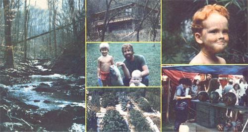

(PHOTOS SUPPLIED BY THE AUTHOR)
Scenes form the Allens's years in Tennessee's beautiful Sycamore Hollow include (from left) a wooded stream . . . their hand-built solar home . . . a prize catch. . . their bountiful garden. . . a happy child. . . a candle-selling display at a craft show. . .